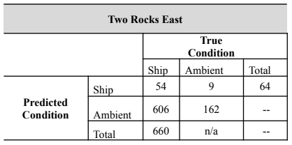
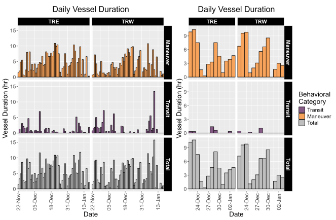
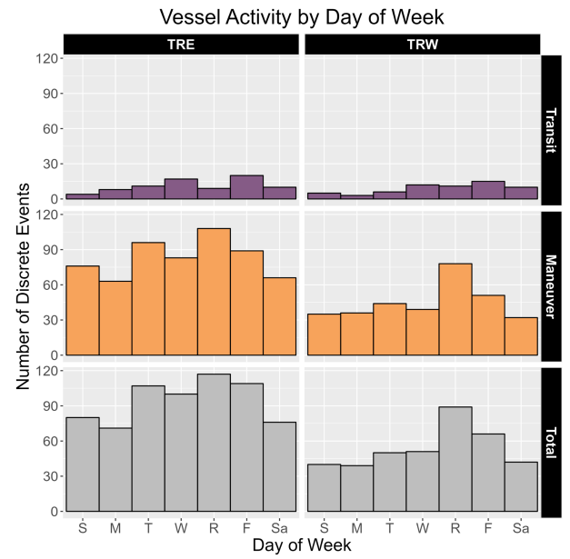
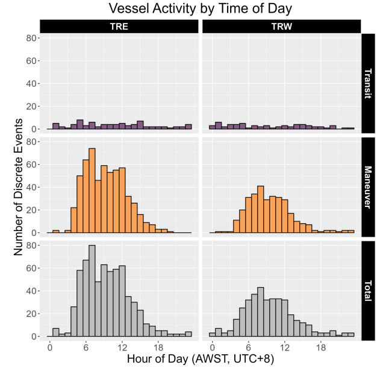
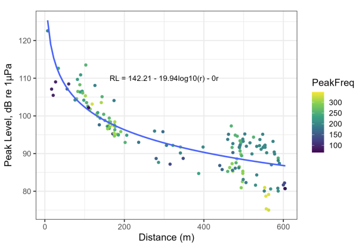
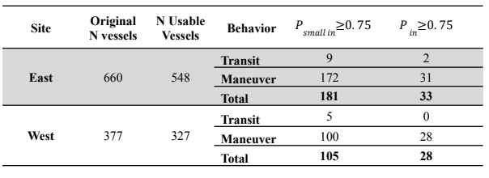
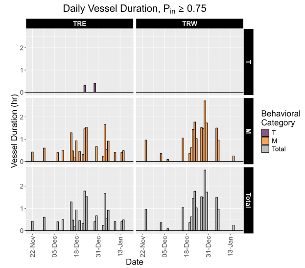
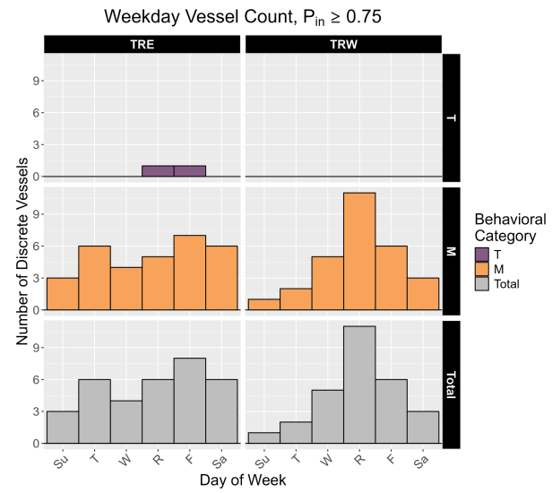
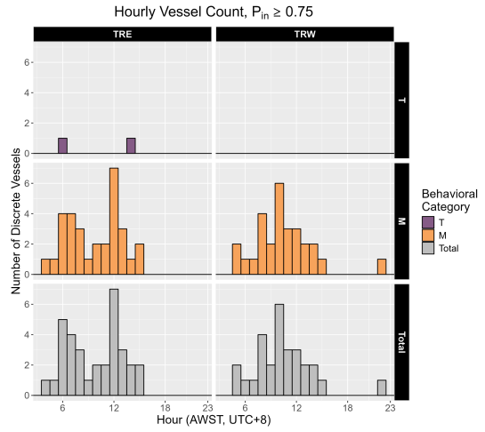

| Site | N Vessels | Duration Range (minutes) | Duration Median (Minutes) |
|---|---|---|---|
| East | 660 | 1.01-260.0 | 24.2 |
| West | 277 | 0.62-430.1 | 30.3 |
| NA | NA | NA | NA |
| NA | NA | NA | NA |
2 Results
2.1 Detector Performance
The vessel detector found a total of 487 events at TRE and 546 events at TRW. Of the events at TRE, 54 events were correctly identified as vessels, and 162 were correctly identified as ambient noise. An additional 9 ambient events were incorrectly identified as vessels, and 262 true ship events were incorrectly classified as ambient noise (Table 2). After manual review of the LTSA, 344 vessels missed by the detector were added to the analysis for TRE. Including these added vessels as false negatives, this detector has a recall value of 0.08 and a precision value of 0.86 (Table 2).
At TRW, the detector correctly classified 60 events as vessels and 195 events as ambient noise. There were 4 false positive events where the detector incorrectly classified ambient noise as ship events and 287 false negative events where ships were incorrectly classified as ambient noise. Manual review of the LTSA was completed for the first 19 days of the deployment, in which 29 additional vessel passages were observed. The precision of the TRW detector (0.93) was similar to TRE (0.86).
The total number of detected ship events at both sites includes vessel events under 500 Hz, which are not used in further analysis throughout this report.

2.2 Overall Patterns of Vessel Presence
After manually reviewing the detections and the LTSA, TRE had a total vessel count of 660 signatures. For TRW, manual review of detections resulted in a total of 377 vessel signatures. At both sites, vessel activity occurred throughout the deployment, although vessels were not present every day. At TRE, vessels occurred on 56/57 days (98.2% of days, mean of 11.7 vessels/day present), and in TRW vessels occurred on 54/57 days (94.7% of days, mean of 7 vessels/day present).
Both sites showed similarities in duration of individual vessel signatures, with median values within 5 minutes (TRE = 24.2 minutes; TRW = 30.3 minutes); however, TRW showed a much greater range of durations, with the longest continuous vessel signature lasting over 7 hours (Table 3, Fig. 2).
Although vessels were present throughout the deployment, presence generally increased throughout the month of December until a sharp decline on December 25 (Christmas holiday). A similar increasing trend occurred between December 25 and December 31 prior to a drop in presence on January 1 (New Year’s Day).

2.3 Weekday Vessel Presence
At both TRE and TRW, there was a pattern of higher vessel activity in the latter half of the week, with the highest number of vessels occurring on Thursdays (TRE: N = 117; TRW: N = 89). Over half of all vessels occurred between Thursdays and Saturdays (TRE: N = 530, 80.3%; TRW: N = 237, 62.9%) (Fig. 3).
Both sites showed the lowest overall activity on Mondays (TRE: N = 71, 10.7%; TRW: N = 39, 10.3%) and Sundays (TRE: N = 80, 12.1%; TRW: N = 40, 10.6%).

2.4 Diel Vessel Presence
Based on sunrise (05:05 – 05:28) and sunset (19:01 – 19:26) times throughout the deployment, most vessels at both sites occurred during daylight hours (05:00 – 18:00; TRE: N = 607, 92.0%, median = 52.5 vessels/hour; TRW: N = 329, 80.6%, median = 28.5 vessels/hour). The highest number of vessels in a single hour occurred at 07:00 at TRE (N = 80) and at 08:00 at TRW (N = 43) (Fig. 4).
Outside of these hours, the highest presence was in the 04:00 hour just before sunrise (TRE: N = 26; TRW: N = 15). The remaining hours (20:00 – 03:00) were consistently lower in vessel counts (TRE: median = 2 vessels/hour, range = 0 – 7; TRW: median = 3 vessels/hour, range = 1 - 7).

2.5 Propagation modeling and detection range
The following transmission loss (TL) equation was fit using empirical RL data from the calibration tracks made at TRE (Eq. 1, Fig. 5). The TRW calibration tracks did not result in a plausible model of transmission loss, but due to similarity of habitat between the two sites, the TL model from TRE was used to determine vessels likely to occur within the NPZ boundaries for both sites.
(Eq. 1): \[ TL_{TRE} = 19.94((r)) + 0.0000r \]

Modeled transmission loss and ambient noise levels were similar between TRE and TRW, with \(NL_{50}\) values of 82.7 dB re 1μPa at TRE and 81.1 dB re 1μPa at TRW. The maximum detection distance for a representative medium-sized vessel at each site was also similar between the sites: TRE = 13.4 km, TRW = 16.1 km. The weighted mean distance between the recorder and the park boundary was 1851 meters for TRE and 1779 meters for TRW.
2.6 Total Vessel Presence within Park Boundaries
For TRE, 548 of the original 660 vessels were usable for propagation analysis. Of those, 181 (33.0% of usable vessels) were likely to occur within the NPZ boundary assuming they were small vessels (SL: 125 – 150 dB re 1μPa). Of those, 172 vessel signatures contained a maneuver (95.0%) (Table 4). Further, there were 33 vessels (6.0% of usable vessels) estimated to occur within the NPZ assuming they were either small or medium vessels (SL: 125 – 170 dB re 1μPa), with 31 signatures (93.9%) containing a maneuver (Table 4).
At TRW, 327 of the original 377 vessels were usable for propagation analysis. There were 105 vessels (32.1% of usable vessels) with \(P_{small\;in} > 0.75\). Of those, a majority of the signatures contained a maneuver (N = 100, 95.2%). If vessels were assumed to belong to either a small or medium size class, then 28 vessels (8.6% of usable vessels) were estimated to occur within the NPZ boundary. Of these, all signatures contained a maneuver.
At both sites, vessels were present inside the park boundary (\(P_{in} > 0.75\)) throughout the deployment, with the highest daily vessel presence by duration occurring in late December (TRE: December 23, 1.78 hours; TRW: December 29, 2.72 hours) (Fig. 6).


2.7 Weekday Vessel Presence within Park Boundaries
At TRE, Fridays had the highest vessel presence (N = 8), followed by Saturdays, Thursdays, and Tuesdays (N = 6 each day) (Fig. 7). The two transiting vessels without a maneuver occurred on Thursday and Friday (N = 1 vessel each day). At TRW, there was a more apparent effect of weekday, with 39.3% of all vessels with \(P_{in} > 0.75\) occurring on Thursdays (N = 11).

2.8 Diel Vessel Presence within Park Boundaries
At TRE, all vessels with \(P_{in} > 0.75\) occurred between 00:00 - 15:00 AWST (range = 1 – 7 per hour) (Fig. 8). The highest number of vessels during a single hour occurred at 12:00 AWST (N = 7), with all of those vessels containing a maneuver. Transiting vessels without a maneuver were detected at 06:00 and 14:00 (N = 1 each hour).
TRW showed a similar concentration of vessel activity early in the day, with the majority of vessels within the NPZ occurring between 05:00 and 15:00 AWST (N = 32, range = 1 – 6 per hour) (Fig. 8). The single vessel outside of daylight hours occurred at 22:00 AWST. Vessel activity peaked at 10:00 (N = 6), with a secondary peak at 08:00 (N = 4).
